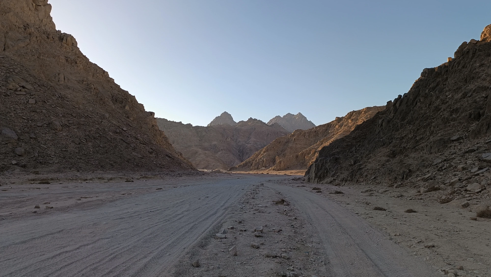
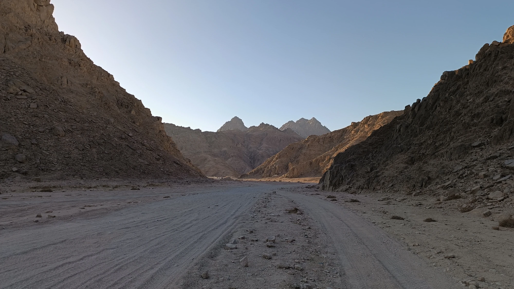
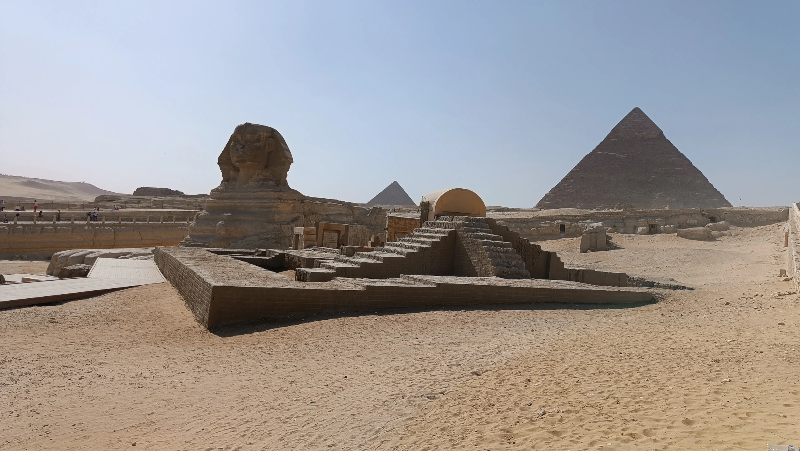
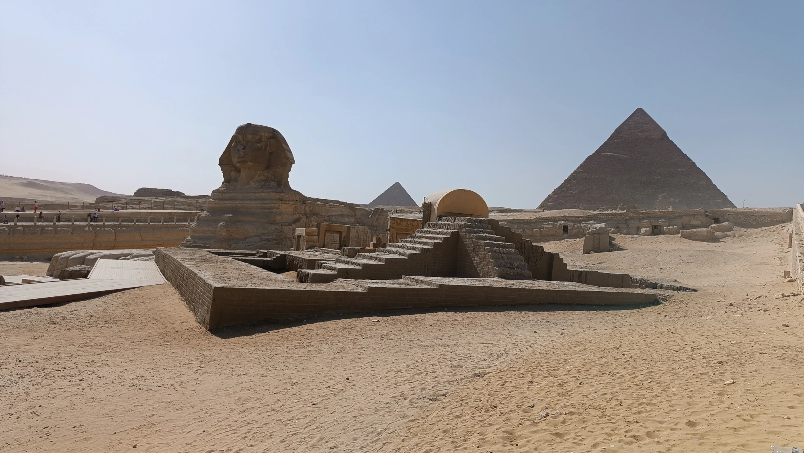

Tajemný Egypt: Kde historie ožívá
Káhira, Luxor, Safaga
Říjen už bývá hraniční. Začíná hodně foukat, takže se vám už ani nechce do vody. Co se týče vnitrozemí, tam je to naopak – spíš byste ho uvítali. Moře už je pěkně vyhřáté a ani tam není tolik lidí.
Cestovaly jsme s EXIMtours. Výhrady nemám. Paní nám doporučila hotel, dle našich preferencí a myslím že byl moc krásný. Sice ze začátku to byly spíš strasti než radosti, ale určitě nelituji.
Bydlely jsme v hotelu Caribbean World Resort Soma Bay a tolik zeleně s tak krásnou pláží jsem ještě u žádného z nabízených hotelů neviděla.
Výlety z našeho resortu jsme řešili přes Safaga Výlety. Má levnější ceny než jsou v rezortu nebo než nabízí delegát a hlavně všichni mluví česky. Paní zařídí úplně všechno - potápění, čtyřkolky, plavby lodí, Luxor, Gízu, delfinárium,... rozhodně neprohloupíte.
Při cestování po Egyptě člověk narazí na věci, které v žádném průvodci nenajde. Třeba když jsme při výletě na čtyřkolkách do pouště (nebo spíš kamenité krajiny) zahlédli něco, co vypadalo jako... marihuana. A opravdu – volně rostoucí konopí tam v některých místech najdete. Místní to příliš neřeší, ale cizinci by měli být opatrní – zákony jsou v Egyptě v tomto ohledu velmi přísné.
A mimochodem – Egypt ve skutečnosti není jen nekonečná písečná poušť, jak si mnozí představují. V některých oblastech, například kolem Hurghady nebo Marsa Alam, najdete pískovcové hory, které tvoří nádherné scenérie – ideální pro výlety na čtyřkolkách, jeepem nebo i pěšky. Krajina je drsná, ale nádherná, a při západu slunce doslova mění barvu.
A co by to bylo za návštěvu Egypta bez vodní dýmky – neboli šíši. Kouření vodní dýmky je v Egyptě běžné a společenské. Místní posedávají v kavárnách, popíjejí sladký čaj nebo kávu a sdílí šíšu s přáteli. Nejoblíbenější příchutě? Jablko, máta nebo meloun. Je to zážitek, který stojí za to – nejen kvůli chuti, ale hlavně kvůli atmosféře.

 

Egypt není jen o historii
Egypt je země, která fascinuje lidstvo už po tisíciletí. Nachází se v severovýchodní Africe a jeho největší část tvoří rozlehlá poušť, přičemž život se soustřeďuje především kolem řeky Nil – jediné velké řeky v zemi, která od pradávna zajišťovala vodu, úrodu i dopravu. Hlavním městem je Káhira, která patří k nejlidnatějším městům Afriky i světa. Egypt je známý svou bohatou historií, sahající až do starověku, kdy zde vznikla jedna z prvních vyspělých civilizací na světě.
I když je Egypt známý hlavně díky své slavné historii, dnešní realita obyčejných Egypťanů je často mnohem složitější. Život v zemi není pro všechny snadný a rozdíly mezi městy a venkovem jsou značné.
Bezpečnost
Egypt je turisticky oblíbenou zemí, a tak je ve většině resortů a známých lokalit bezpečno. Turistické oblasti jako Hurghada, Marsa Alam nebo Luxor jsou pod dohledem policie a bezpečnostních složek. Větší obezřetnost je na místě v Káhiře a méně navštěvovaných regionech – hlavně kvůli drobné kriminalitě. V některých oblastech (například u libyjských hranic) se stále doporučuje necestovat bez průvodce.
Před vstupem do hotelu, letiště nebo nákupního centra často projdete bezpečnostním rámem – pro místní běžná věc.
Náboženství
V Egyptě převládá islám, konkrétně sunnitský směr. Přibližně 90 % obyvatel jsou muslimové a zbytek tvoří převážně křesťané – většinou tzv. koptové. Náboženství hraje v každodenním životě významnou roli. Modlitby pětkrát denně z mešit jsou běžnou kulisou každého dne, a během ramadánu (půstního měsíce) se životní rytmus mění – přes den je klid, večer se jí, slaví a kavárny jsou plné až do noci.
Turisté by měli respektovat místní zvyky: oblékat se střídmě, zejména mimo resorty, a vyhýbat se projevu veřejné náklonnosti.
V Egyptě sice uvidíte moderně oblečené Egypťanky, zejména ve velkých městech, ale konzervativní styl oblékání je stále normou, obzvlášť mimo turistické oblasti. Ženám se doporučuje vyhnout se odhaleným ramenům, krátkým sukním nebo šortkám, a to hlavně při pohybu po městě, návštěvě památek nebo při cestách mimo resort.
Odhalené nohy a ramena mohou přitahovat nechtěnou pozornost, pohledy, pískání nebo nepříjemné komentáře. Nejde vždy o zlé úmysly – často spíš o kulturní nepochopení. Proto je lepší zvolit lehké, volné oblečení, které kryje kolena a ramena – nejen z úcty k místním zvykům, ale i kvůli komfortu při pohybu na slunci.
Dobrá zpráva? V turistických letoviscích a hotelích je oblečení mnohem uvolněnější, a plavky na pláži nebo tílko při večeři v resortu problémem nejsou.
Doprava
Doprava v Egyptě je… zážitek. Ve městech vládne chaos – auta si často troubením „povídají“, semafory se ignorují a přecházet silnici je někdy adrenalinový sport. Veřejná doprava je levná, ale nepřehledná. Turisté většinou využívají taxi nebo aplikace jako Uber. Na delší vzdálenosti fungují dálkové autobusy nebo vnitrostátní lety.
Zvláštnost: Na silnicích běžně potkáte i povozy tažené oslíky, hlavně na venkově.
Bydlení
Ve městech žijí lidé často v bytových domech – některé moderní, jiné velmi zanedbané. Na venkově převažují jednoduché cihlové domky, často nedokončené – paradoxně kvůli daním (nedokončený dům je zdaněn méně). Mladé páry často bydlí s rodiči, protože samostatné bydlení je finančně náročné.
Důchody
Důchodový systém v Egyptě funguje, ale částky jsou nízké – často kolem 1 000 egyptských liber měsíčně (cca 30 eur). Starší lidé často zůstávají závislí na podpoře rodiny. V zemi není běžná státní podpora, na jakou jsme zvyklí v Evropě – solidarita mezi generacemi je zde klíčová.
V Egyptě je zákonný věk odchodu do důchodu aktuálně stanoven na 60 let, a to jak pro muže, tak pro ženy.
Ovšem pozor – situace se mění. Egyptská vláda schválila postupné zvyšování důchodového věku. Cílem je, aby do roku 2040 byl důchodový věk zvýšen na 65 let. Zvyšování probíhá po jednotlivých ročnících, podobně jako v některých evropských zemích.
Kultura a zvyky
Egyptská společnost je velmi rodinně orientovaná. Rodina hraje klíčovou roli, a to i ve veřejném životě. Tradiční hodnoty a úcta ke starším jsou stále velmi silné. Lidé jsou pohostinní, srdeční a rádi si povídají – i s cizinci.
Velmi důležitou roli hraje také hudba a tanec – například slavný břišní tanec, nebo tradiční bubnování při svatbách. Mimochodem, svatby jsou tu obrovská událost a často trvají několik dní.
Ekologie a životní prostředí
Egypt čelí velkým ekologickým výzvám. Největší problém představuje nedostatek vody, protože Nil je prakticky jediný zdroj. Mnoho oblastí trpí suchem, a s rostoucí populací (přes 110 milionů obyvatel) se situace zhoršuje.
Dalším problémem je odpad – zejména plastový. Mnoho venkovních oblastí, ale i některé části měst, jsou silně znečištěné. Recyklace je minimální, a povědomí o ekologii se teprve pomalu rozvíjí.
Ekonomika
Egypt je jednou z největších ekonomik v severní Africe, ale zároveň zemí plnou extrémních rozdílů mezi bohatstvím a chudobou. Města jako Káhira či Alexandrie mají moderní obchodní centra, zatímco na venkově lidé často žijí velmi skromně, někdy až na hranici přežití.
Hlavní pilíře egyptské ekonomiky:
- Cestovní ruch – jeden z nejdůležitějších zdrojů příjmů. Pyramidy, Luxor, Rudé moře – to vše přitahuje miliony turistů ročně.
- Suezský průplav – strategický vodní kanál, kterým proplouvají tisíce lodí a přináší miliardy dolarů v poplatcích.
- Zemědělství – díky Nilu se v úzkém pásu kolem řeky daří pěstovat pšenici, rýži, bavlnu i zeleninu.
- Ropa a plyn – Egypt těží suroviny, které jsou důležitým exportním artiklem.
- Práce Egypťanů v zahraničí – miliony lidí pracují například v Saúdské Arábii či Kuvajtu a posílají peníze domů.
Problémy a výzvy:
- Inflace – ceny v Egyptě v posledních letech velmi vzrostly. Základní potraviny, léky nebo palivo jsou pro mnohé Egypťany stále hůře dostupné.
- Kurz měny – egyptská libra výrazně oslabila vůči dolaru i euru. Pro turisty je to výhodné, pro místní tragické. Co se týče výměny peněz (vyměň si peníze až v Egyptě – kurzy jsou lepší než v Česku), určitě se vyplatí platit v egyptské měně – jakmile někdo vidí dolary, často si automaticky řekne o dvojnásobek.
- Dluhy – země má vysoký státní dluh a závisí na půjčkách od Mezinárodního měnového fondu.
- Nezaměstnanost – hlavně mezi mladými lidmi je vysoká. Mnozí vysokoškoláci si nemohou najít práci ve svém oboru.
Chudoba
Chudoba je v Egyptě stále rozšířeným problémem. Podle oficiálních údajů žije kolem 30 % obyvatel pod hranicí chudoby. Nejvíce jsou zasaženy venkovské oblasti, kde lidé často nemají přístup ke kvalitní práci, pitné vodě nebo zdravotní péči.
Když přijedete do Káhiry, chudoba je patrná hned na první pohled. Nejvíc mě zasáhl zážitek na jedné křižovatce, kde k našemu autu přiběhly malé děti a gesty rukou naznačovaly, že mají hlad. Podobnou situaci jsme zažili i na čerpací stanici, kde se k nám seběhla další skupinka žebrajících dětí. Průvodci se je snažili odehnat, ale my jsme jim dali hotelové balíčky s jídlem. Bylo to opravdu srdcervoucí – o to víc, když si vzpomenu, že jiný den jsme stejným balíčkem krmili toulavé psy.
Mnoho rodin si nemůže dovolit posílat děti na střední školu nebo jim platit doučování, které je v Egyptě běžné kvůli slabé úrovni veřejného školství.
Školství
V Egyptě je školní docházka povinná od šesti do čtrnácti let a základní školy jsou zdarma. Přesto školství čelí mnoha výzvám. Ve venkovských oblastech jsou školy často přeplněné, chybí učební pomůcky a kvalitní učitelé. V posledních letech se vláda snaží školství modernizovat, zavádět digitální technologie a zlepšit výuku cizích jazyků, ale změny jsou pomalé a ne vždy dostupné všem.
Zdravotnictví
Zdravotní péče je v Egyptě formálně dostupná pro všechny, ale kvalita se výrazně liší podle místa a finanční situace. Ve městech existují moderní soukromé nemocnice, které ale nejsou dostupné pro chudší vrstvy obyvatel. Veřejné nemocnice bývají přeplněné a často postrádají základní vybavení. Léky jsou většinou dostupné, ale drahé – a i tady platí, že kdo má peníze, má lepší péči.
Egyptské speciality, které stojí za ochutnání
Když se řekne Egypt, většina si představí pyramidy, poušť a Nil. Ale Egypt je i zemí plnou vůní a chutí. Tradiční jídla jsou důležitou součástí kultury a místní kuchyně si zakládá na čerstvých surovinách, luštěninách a koření.
Koshari (kúšarí)
Jedno z nejoblíbenějších egyptských jídel, které si zamilují i vegetariáni. Jde o směs rýže, čočky, těstovin a cizrny, přelitou rajčatovou omáčkou a posypanou smaženou cibulkou. Zní to zvláštně? Možná, ale chutná skvěle – a hlavně zasytí na dlouhou dobu.
Ful medames (fúl midámis)
Vařené boby, často podávané k snídani. Dochucují se citronovou šťávou, česnekem, olivovým olejem a kmínem. Je to levné, jednoduché a velmi výživné jídlo, které se jí často s chlebem typu pita.
Ta'ameya (egyptský falafel)
Na rozdíl od klasického falafelu z cizrny se ta’ameya připravuje z bobů. Smaží se dozlatova a často se podává s tahini omáčkou, salátem a pita chlebem. Je to oblíbené jídlo jak na ulici, tak doma.
Molokhia
Zelená polévka nebo omáčka připravená z listů rostliny molokhia (něco jako špenát). Vaří se s česnekem a kuřecím nebo králičím vývarem. Je to tradiční jídlo, které mají Egypťané rádi už po generace.
Om Ali (Um Alí)
Tradiční egyptský dezert – něco jako pečený pudink z listového těsta, mléka, cukru a ořechů. Podává se teplý a je oblíbený při slavnostních příležitostech. Název znamená doslova „Aliho matka“.
Káhira – srdce Egypta, které nikdy nespí

Káhira, hlavní město Egypta, je obrovská, hlučná, chaotická, ale zároveň plná života a historie. Žije tu přes 20 milionů lidí, což z ní dělá jednu z nejlidnatějších metropolí světa. Kdo ji navštíví, má často pocit, že se tu zastavil čas i že ho předbíhá zároveň.
Na jedné straně tu najdeš moderní čtvrti s mrakodrapy a nákupními centry, na straně druhé starobylé mešity, úzké uličky plné trhů a zaprášené domy, ve kterých jako by se od 19. století nic nezměnilo.
Doprava v Káhiře je kapitolou sama pro sebe – chaos, zácpy, troubení, smog, obouchaná auta. Ale funguje tu metro, jedno z mála v Africe, které je levné a relativně přehledné. Pro turisty bývá nejpohodlnější objednat si taxi přes aplikaci (Uber nebo Careem).
V Egyptě na přechody pro chodce a semafory většinou zapomeňte – zvlášť mimo velká města. I když sem tam nějaký najdete, málokdo ho respektuje. Silnice přecházíte „na vlastní nebezpečí“ – vklouznete mezi proud aut, natáhnete ruku na znamení „zpomal, prosím“ a doufáte v nejlepší. Paradoxně to nějak funguje – auta vám většinou uhýbají, ale chce to odvahu a trpělivost.
Káhira může být na první pohled šokující – špinavá, přelidněná, hlučná. Ale když jí dáš čas, ukáže ti svou energii, historii a nezaměnitelnou atmosféru.
Pyramidy v Gíze - Gízská nekropole
Jedním z nejznámějších symbolů Egypta jsou pyramidy. Největší a nejikoničtější z nich – Cheopsova pyramida v Gíze – je jedním ze sedmi divů starověkého světa a jako jediná z nich se dochovala dodnes. Společně s dalšími dvěma pyramidami a Sfingou tvoří monumentální komplex, který každoročně přitahuje miliony turistů.
Pyramidy byly stavěny jako hrobky pro faraony, vládce starověkého Egypta. Jejich velikost a přesnost výstavby fascinují archeology dodnes. Není úplně jasné, jak byly obrovské kamenné bloky přemísťovány, a kolem jejich stavby se dodnes točí řada teorií a legend.
Pyramidy nejsou jen hrobky pro faraony, ale archeologové objevili i menší hroby v jejich okolí, které patřily lidem, kteří se na stavbě podíleli. Nešlo o otroky, jak se dříve věřilo – novější výzkumy ukazují, že to byli kvalifikovaní dělníci, často dobře živení a placení, a jejich práce byla považována za čest.
Tito dělníci měli vlastní vesnice a zázemí, kde bydleli během stavby. Když zemřeli, byli někdy pohřbeni v blízkosti pyramid – což bylo vnímáno jako velká pocta. Jejich hrobky samozřejmě nebyly tak velkolepé jako ty královské, ale i tak to ukazuje, že si tehdejší společnost vážila jejich práce.
Egyptské muzeum – kde ožívají dějiny
Přímo v centru Káhiry, na náměstí Tahrír, stojí Egyptské muzeum, které je jednou z největších sbírek staroegyptských památek na světě. Bylo otevřeno už v roce 1902 a po více než století sloužilo jako hlavní místo, kde se shromažďovaly nejcennější artefakty z dob faraonů.
Najdeš tu přes 120 000 exponátů – od obřích soch přes šperky, papyry, mumie až po nádoby, nástroje i náhrobky. Pro milovníky historie je to doslova ráj. Největší pozornost ale vždy přitahuje poklad hrobky faraona Tutanchamona – jeho slavná zlatá pohřební maska, trůn, šperky a předměty, které byly pohřbeny s ním, aby mu sloužily v posmrtném životě.
Nedaleko muzea bylo v roce 2021 otevřeno Nové Velké egyptské muzeum u pyramid v Gíze, kam se postupně přesouvá většina sbírek, včetně slavného pokladu Tutanchamona.
Papyrus – papír starověkého Egypta
A málem bych zapomněla na navštěvu tradiční dílny na výrobu papyru, kde se dozvíš, jak staří Egypťané vyráběli svůj slavný „papír“ z rostliny papyrus, která rostla podél Nilu. Dnes je to především řemeslná a turistická atrakce, ale celý proces výroby je stále fascinující.
Ukážou ti:
- jak se stonky papyru rozřezávají na tenké proužky
- jak se máčí ve vodě
- jak se skládají do kříže
- jak se lisují a suší, až vznikne pevný, ale ohebný list
Papyrus se pak maluje nebo zdobí staroegyptskými motivy – bohové, hieroglyfy, scény z každodenního života. Některé dílny nabízí i možnost si vlastní papyrus vyzkoušet ozdobit nebo koupit, ale pozor na levné napodobeniny z banánových listů, které se vydávají za pravý papyrus.
Je to krásný suvenýr, který má nejen dekorativní, ale i historickou hodnotu – papyrus je totiž jeden z nejstarších materiálů, na které kdy lidstvo psalo.
Za zmínku rozhodně stojí i plavba po Nilu – další nezapomenutelný zážitek, při kterém na chvíli zapomenete na drsnou realitu ulic, na kterou u nás nejsme zvyklí.
 


Luxor – otevřené muzeum pod širým nebem
Luxor býval v dobách starověkého Egypta znám jako Théby, hlavní město říše a centrum moci, náboženství i pohřebních rituálů. Dnes je považován za největší archeologickou oblast na světě a každého, kdo se zajímá o historii, tady doslova ohromí.
Je to ideální místo pro ty, kteří touží po poznání dávných civilizací. Nabízí neopakovatelné zážitky – ať už jde o východ slunce při letu horkovzdušným balónem nad pouští a majestátními chrámy, nebo o večerní prohlídku chrámu za magického osvětlení.
Údolí králů
Na západním břehu Nilu se nachází slavné Údolí králů, kde byli pohřbíváni největší faraoni Nové říše (cca 1550–1070 př. n. l.). V horkém skalnatém údolí se skrývá více než 60 hrobek, z nichž mnohé jsou nádherně vyzdobené. Nejznámější je hrobka Tutanchamona, objevená v roce 1922 Howardem Carterem. Překvapivě malá, ale proslulá díky zlatým pokladům, které v ní byly nalezeny. Právě do ní jsem se chtěla podívat jako jediná ze skupiny (vstup byl asi za 9$), ale protože jsem nechtěla zdržovat ostatní, nakonec jsem to oželela – a teď toho opravdu lituji.
Některé hrobky jsou veřejnosti přístupné, ale pozor – ne všechny najednou. Vstupenky se kupují zvlášť a doporučuje se mít průvodce, protože bez výkladu je těžké pochopit význam výjevů na stěnách. Fotit se většinou smí, ale bez blesku a jen v některých hrobkách.
Údolí královen
O kousek dál se nachází méně známé, ale stejně fascinující Údolí královen, kde odpočívají manželky a děti faraonů. Nejkrásnější hrobkou je ta královny Nefertari, manželky Ramesse II. Její malby jsou neuvěřitelně zachovalé a považují se za jedny z nejkrásnějších v Egyptě. Vstup je omezený a dražší, ale pokud tě fascinuje starověké umění, stojí to za to.
Chrám v Karnaku
Na východním břehu stojí Karnak – obrovský chrámový komplex zasvěcený bohu Amonovi. Je to největší náboženský komplex, jaký byl kdy postaven. Najdeš tu les sloupů, obelisky, posvátné jezírko i tzv. hypostylovou síň s více než 130 gigantickými sloupy. Každý kámen tu má svou historii.
Díky hieroglyfům a reliéfům se tu dá „číst“ minulost – a při západu slunce působí chrám až magicky. Dají se tu zažít i noční světelné show, které promítají historii přímo na zdi chrámu.
Alabastrová dílna – tradiční řemeslo
Na západním břehu často průvodci zavedou turisty do alabastrových dílen, kde se ručně vyrábějí vázy, sošky i lampy z místního kamene. Alabastr je průsvitný, jemný kámen – vypadá skoro jako mramor, ale je měkčí a teplejší na dotek.
V dílně ti ukážou, jak se kámen těží, opracovává a leští. Místní řemeslníci používají tradiční nástroje a pracují s precizností, která se dědí po generace. Výrobky se často nabízí k prodeji – některé jsou krásné suvenýry, jiné turistické pasti, takže je dobré porovnat ceny.
Nesmím zapomenout na plavbu lodí po Nilu na Banánový ostrov, kde si můžete za dolar pochovat opičky, malého aligátora nebo nakrmit a posadit se na velblouda.